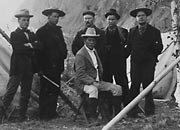
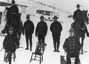
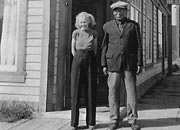
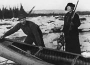
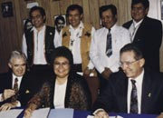

À la fin du XIXe siècle, la population du Yukon était très petite et la plus grande partie était composée d’Autochtones. L’anthropologue Catharine McClellan a estimé qu’il y avait au plus une personne par 100 kilomètres carrés. De petits groupes de mineurs et de piégeurs habitaient également ici, travaillant le long des ruisseaux et des rivières.
Le gouvernement était peu représenté au Yukon. Le territoire n’était qu’un district provisoire des Territoires du Nord-Ouest et le siège du gouvernement était à Regina. Toutefois, en octobre 1897, le Yukon a obtenu le statut de district. L’année suivante, le 13 juin 1898, c’était la naissance du territoire du Yukon.
À l’époque, le territoire du Yukon était gouverné par un commissaire et un conseil nommé par Ottawa. Cinq ans plus tard, un ministre fédéral a visité le Yukon et il a fallu dix ans avant que le conseil soit élu au lieu de nommé. Dans les années 1970, le gouvernement du Yukon a adopté la forme actuelle de gouvernement. Le statut du territoire est semblable à celui d’une province, mais contrairement aux pouvoirs que détiennent les provinces, les pouvoirs territoriaux sont indirectement issus du Parlement du Canada et peuvent être changés par celui-ci. Aujourd’hui, la plupart des agglomérations du Yukon ont une administration municipale.
En 1973, les Premières nations du Yukon ont commencé à négocier des ententes sur les revendications territoriales avec les gouvernements du Canada et du Yukon, se concentrant sur l’autonomie gouvernementale, l’utilisation des terres, la faune, l’éducation, la justice et le patrimoine. Aujourd’hui, les mesures législatives sur les revendications territoriales sont enchâssées dans la Constitution du Canada. Les nouveaux partenariats permettent le plein partage des responsabilités gouvernementales.
La dignité d’un district
(Ci-dessus) Mme Bratsburg sur le dôme (sans date). Dawson a été la capitale du territoire jusqu’en 1953, lorsque le siège du gouvernement a été déménagé à Whitehorse.
AY, collection Birchmore, 88/125 nº 69
Le major James Morrow Walsh (centre), posant ici à Bennett, a été nommé le premier commissaire du Yukon en août 1897. Son voyage au Yukon a été des plus difficiles. Il n’est pas arrivé à Dawson avant mai 1898, moment où il a remis sa démission.
AY, collection de la Vancouver Public Library nº 2230
À la formation du territoire, la Police à cheval du Nord-Ouest était la principale et souvent la seule présence gouvernementale.
AY, collection Johns, 82/318 nº 276
Gudrun Sparling (née Erickson) et Jim Boss devant l’hôtel Regina (vers 1938). Jim Boss, alias Kishwoot, a été chef du peuple tutchone du Sud Ta’an Kwäch’än du lac Laberge durant plus de 50 ans. Il est considéré comme un des pères du processus de revendications territoriales au Yukon.
AY, collection Sparling, 92/34 nº 2
George et Martha Louise Black. George Black a rempli trois mandats au conseil du Yukon (1905-1912), et a été commissaire de 1912 à 1916. Il a été élu à titre de député conservateur en 1921. Au moment où il a été obligé d’interrompre ses activités, à cause de son mauvais état de santé, sa femme s’est présentée dans la circonscription de son époux et a gagné.
AY, collection Martha Louise Black nº 3258
(de g. à d., avant) : Tom Siddon, ministre des Affaires indiennes et du Nord canadien, Judy Gingell, présidente du Conseil des Indiens du Yukon, John Ostashek, chef du gouvernement; (de d. à g., arrière) : Robert Hager, chef de la Première nation Nacho Nyak Dun, Robert Bruce Jr., chef de la Première nation Vuntut Gwitchin, Paul Birckel, chef des Premières nations Champagne et Aishihik et Dave Keenan, chef du Conseil des Tlingit de Teslin à la cérémonie de signature de l’Accord-cadre définitif, le 29 mai 1993.
Gouvernement du Yukon.